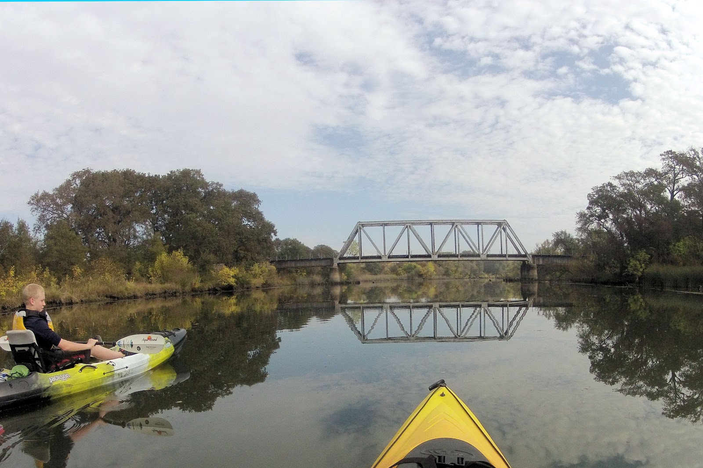

Why We Shouldn’t Dam the Cosumnes
The Cosumnes River, the last undammed river in California’s Central Valley, stems from the Sierra Nevada Mountains and flows
through uppermost California. As dam construction rapidly increases to match the demands of agricultural and industrial
sectors, the relevance of analyzing this undammed river and its distinctiveness becomes most critical. Not long ago,
in Fall 2014, a group of people formed the Cosumnes Coalition program with the aims of restoring and protecting the
river and its ecosystem. Now partnered with many other representatives, such as UC Merced experts, this coalition program
continues to lead the river’s conservation movement while encouraging nearby communities to collaborate in their efforts.
By looking at the Cosumnes River’s unique vegetation, aquatic life, and cultural ties, one can best see the significance
of such a group’s movement and understand why this river should remain undammed.

Where Water Flows Plants Grow
Unobstructed by dams and able to flow freely, the Cosumnes River and its floodplains, thrive with diverse vegetation. Delicate
lavender beethistles scatter the riverbanks while majestic California Oaks shelter the vast green land that goes on
for miles adjacent to the river. Known to have one of the richest riparian floodlands in all of California, this river
is unlike any other. Nevertheless, should this river be dammed, this would no longer be the case. You see, dams pose
a threat to floodplain vegetation. When heavy rain accumulates within the walls of a dam, the high-pressured water
flows are forced to breach the dams, overall resulting in the detrimental flooding and harming of nearby vegetation.
Dams also work against a river’s vegetation because they discourage sediment and seedlings from passing through. Retaining
much of its natural hydrology, the Cosumnes River’s flood waters, on the other hand, do not destroy vegetation. Its
free-flowing floodwaters spread across floodpains, carrying sediment, and distributing plant seedlings, thereby contributing
to the growth of an ecosystem. As of today, the Cosumnes River’s Preserve consists of “40,000 acres of riparian forests,
wetlands, vernal pool grasslands and agriculture,” with over 15% of these acres purely devoted to oaks and willows.
Given this enormous amount of vegetation, it thus comes to no surprise that the river’s waters are also filled with
a bounty of fish, all whom depend on the plants for nourishment and habitat.
Fish Passage
The Cosumnes River accommodates a variety of fish species. Constrained by no borders, the fish that inhabit this river, have
the ability to migrate up and downstream, access nurseries and food sources, and live a long life that would’ve been
cut short had the river been dammed. Dams present problems to fish, specifically flow-sensitive fish. A study looking
at dams and their effects on fish species, found a total of 412 dams, many concentrated within southern California’s
coast and the Sierra Nevada foothills, to have lost flow-sensitive fish species. Additionally, all of these dams were
near fish that are known to be endangered. One particular fish population that’s been most studied in regards to the
Cosumnes River is the Chinook salmon. Studying these fish is crucial to understanding the negative effects that dams
pose on a river’s aquatic life. Chinook salmon are a migratory species. Originally born in freshwater, these fish then
migrate to the sea, to then return back to freshwater to spawn. However, their ability to migrate and reproduce is
drastically impaired when dams are placed in their way. Dams impede a salmon’s upstream passage and as a result not
many of them get to reach the spawning habitat and die. But this need not apply to salmon traveling alongside the Cosumnes
River. Because of the Cosumnes River’s natural hydrology, salmon and other migratory fish are able to successfully
migrate upwards and reproduce. It is also because of this river’s free flowing streams and fish abundance, that this
river has such a rich history of settlement. The Cosumnes River, its vegetation, and its fish also sustain human life.
Cosumnes Culture and the Miwok People
Years before the Cosumnes River Preserve stood in place, a group of people, known as the Miwok, inhabited the land near the
Cosumnes. The Miwok thrived by the river, cherishing the fish and plants that it provided. Unfortunately, after the
Gold Rush struck, the Miwok were forced to leave their territory and relocate elsewhere. Though the Miwok no longer
live there, the Cosumnes River Preserve continues to receive many visitors looking to learn about their ancestral land
and, as told by the CCAW, “hear the voice of the waters, the land, the plants and the trees.” Descendants of the Miwok
now walk the trails of the preserve imagining what life was like for their ancestors, and seeking to pass on their
wisdom of the river’s vitality to anyone willing to learn. This land, this river, marks a sacred place in Miwok culture.
Dam this river, and you destroy what remains of this group’s sacred land.
Let the River Flow
Although, having only recently been established, the Cosumnes Coalition program is rapidly increasing in momentum. With the
river’s diverse vegetation, aquatic life, and history in mind, this program prides itself in promoting restorative
and sustainable river usage practices. Nonetheless, this program would not be where they are at without the help of
the public. For it takes an informed community to keep this conservation movement alive.
Want to Get Involved?
This coalition and their partnerships need all the help they can receive and you can get involved. Sign up to volunteer at
the Cosumnes River Preserve and help staff with conservation projects or get involved with Cosumnes Culture and Waterways
(CCAW) to learn more about Miwok culture and river practices.